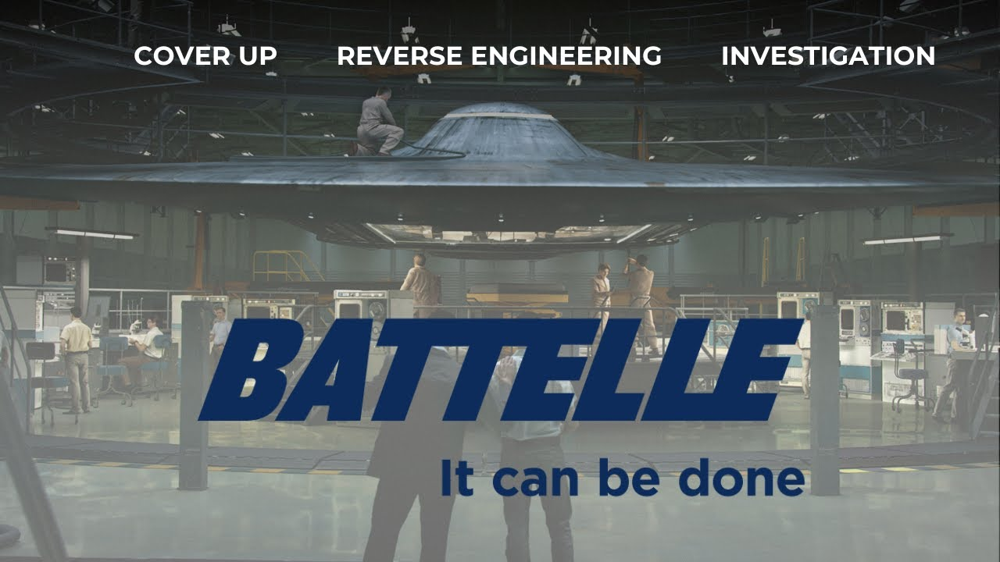

UFOs in the Private Sector - Battelle Memorial Institute

Published: 2024-02-19 · Duration: 17:06 · Channel: UAP Gerb
Description
Guys, today we will be conducting our first investigation into private sector companies with involvement in the UAP phenomena. Our first culprit, Battelle Memorial Institute, a non-profit, private company with a prolific history in all endeavors scientific - from Apollo 11 space travel to biological weapons.
Battelle has been deeply engrained with the study and cover-up of the UFO phenomena, dating all the way back to the 1950s when Battelle alongside the USG and USAF participated behind the scenes in creating a machine index to categorize UFO reports as well as playing their hand to quell public interest in the phenomena.
As mentioned by UFOlogist Jacques Vallee with a deep supporting paper trail, Battelle has also directly studied UAP material, likely a shape memory metallic alloy found at the 1947 Roswell Crash site, now commonly referred to as nitinol.
Join me on today's investigation as we connect the dots from Roswell to shadowy modern-day players pulling the strings of Sean Kirkpatrick to drive the UAP narrative!
0:00 Intro 1:52 Project Stork 3:49 Special Report No. 14 4:16 Exotic Metallurgy 8:43 EJ Center 11:10 Jacques Vallee 12:47 AARO, Battelle, Moultrie 14:42 Conclusion
Progress Reports on Project Stork: https://www.cufon.org/cufon/stork1-7.htm
Howard C. Cross Project Stork: https://pbs.twimg.com/media/EcRd7A8WoAIaXL1?format=jpg&name=900x900 https://pbs.twimg.com/media/EcRhgjPX0AAezWX?format=jpg&name=900x900
Special Report No. 14: https://www.cia.gov/readingroom/docs/CIA-RDP81R00560R000100060001-5.pdf
Second Progress Report on Titanium Alloys: https://documents2.theblackvault.com/documents/dtic/b816506.pdf
AEC Research and Development Reports: https://digital.library.unt.edu/ark:/67531/metadc843755/
MISSING: UPDATE ON PROJECT STORK (HAVE PDF BUT NOT LINK)
1994 MUFON Ohio: https://www.mufonohio.com/mufono/OH_crash_connection.html
EJ Center: https://www.findagrave.com/memorial/75517825/e.-john-center
History of Nitinol: https://www.kelloggsresearchlabs.com/2018/01/10/brief-history-of-nitinol/
Christopher Sharp Moultrie LinkedIn: https://twitter.com/ChrisUKSharp/status/1702452847672017203
Moultrie Roundtable: https://www.defense.gov/News/Transcripts/Transcript/Article/3249303/usdis-ronald-moultrie-and-dr-sean-kirkpatrick-media-roundtable-on-the-all-domai/
Music by the always talented: https://www.youtube.com/channel/UCz71_7z7NphLPZ0l_7G3Llg
JOIN THE UAPGERB DISCORD: https://discord.gg/xtbpCJdWEs
ufo #uap #uapnukes #uapdisclosure #ufology #ufonews #ufosightings #uapsightings #ufofootage #uapfootage #hynek #condoncomittee #Jallenhynek #projectsign #projectgrudge #projectbluebook #bluebook #ufocongress #SOL #solfoundation #karlnell #Battelle #UFOreverseengineering
Transcript
Show transcript
Meet Battelle Memorial Institute, a private non-profit applied sciences and technology development company whose mission is to, quote, deliver scientific discovery and applied research that makes the world a better place to live. This private non-profit has a prolific list of USG-contracted work, including classified SAPs. Battelle has a storied history in the technological development of our US society, including research into the fabrication of uranium for the Manhattan Project from 39 to 52, development of the photocopy machine and UPC barcode system, work on combustion, electronics, energy, conversion, propellants, all for Apollo 11, and military research into biological and chemical weapons slash defense systems and more. Today, Battelle manages the National Biodefense Analysis and Countermeasures Center at Los Alamos National Laboratory and the National Renewable Energy Laboratory, NREL, as well as Oak Ridge National Lab, all of which are DOE-sponsored labs. So we already see some ties here with Battelle and the USG UAP work in Los Alamos and the DOE. But what if I told you, Battelle is harboring a dark secret, that the company has a long history of studying UFOs, aiding the USG and USAF in the UFO cover-up, and has even conducted analysis on UFO material. Hey guys, it is UAP Gerb and we are finally going to start to dive into one of the most fascinating aspects of the UFO phenomena, the private sector's connection to the study of UFOs. Numerous key figures such as David Grush, Lou Elizondo, Chris Mellon, Eric Davis, former Senator Harry Reid, and more have made direct statements that USG defense contractors have a direct hand in the reverse engineering and crash retrieval of UAP. So today we are going to dive into one such company with real dirty hands on work of UFO material and research, the Battelle Memorial Institute. The earliest tracing of Battelle and UFOs goes to something called Project Stork. In 1952, the director of the Central Intelligence received a memorandum titled Flying Saucers, which detailed an arrangement between ATIC, the Air Force Technology Intelligence Committee, and Battelle Memorial Institute for the contractor to establish a machine indexing system for official reports of UFO sightings. On the 9th of January, 1953, Battelle's Dr. Howard C. Cross proposes that the ongoing Project Stork, quote, assists the Air Force in reassuring the public that everything is well under control with respect to the UFO problem. At the time, this memo was classified secret and even calls to attention Captain Edward J. Ruppelt, the project's sign, grudge, and bluebook director. I've talked about him in the history of the stigma, so check that video out if you haven't. If you'll remember from that same video, in 1953, the Robertson Panel was conducted to ensure that all national security agencies should strip UFOs of, quote, special status and suggest the public there is no legitimate evidence of their existence. While the Robertson Panel was conducted, Battelle had been commissioned around the same time to separately analyze all Air Force UFO cases away from bluebook or these official panels under codename STORK. This project paralleled to bluebook and was even mentioned by J. Allen Heineck during his attempted testimony at the Robertson Panel. Thanks to the efforts of SUFON, the computer UFO network, I have been able to find all seven Project STORK status reports. That is another analysis for another day, however, all parts of course will be provided in the video description. On the 5th of May, 1955, Battelle and ATIC published a comprehensive analysis of 3,200 UFO sightings titled Special Report 14. This report concluded that UFO are not aerial aircraft beyond human scientific knowledge because no physical matter had ever been recorded from any UFO sighting. But if we dig deeper, there is a massive contradiction here from Battelle's claim that no physical matter had ever been recovered. Six years earlier in 1949, Battelle had been contracted by none other than Wright-Patterson Air Force Base to perform analysis on shape memory alloys. See on screen now and in the video notes the first and second progress report covering the period of September 1st to October 21st, 1949 on research and development of titanium alloys. The bulk of these investigations focus on Nitinol, a nickel-titanium alloy, a metal that would not be officially discovered until 1961 by Dr. William J. Bueller. So Battelle was performing analysis on the nickel-titanium shape metal alloy, now known as Nitinol, over 10 years prior to its official discovery? Well what exactly is Nitinol? For you material scientists out there and I am not one of you, Nitinol has the unique properties of super-elasticity and shape memory. The metal can be subjected to high levels of stress and snap back to its original shape when pressure is released, showing no deformation on the material. Nitinol is also elastochloric where the material heats up when exposed to a mechanical force field. When this heat is released into the environment and the force field is removed, the material super cools and extracts the same amount of heat from the environment again. If I am not stressing this enough, Nitinol is a remarkable material that is exceedingly difficult to manufacture due to the exceptionally high and tight compositional control required and the tremendous reactivity of titanium. The material is even used for thermal and electrical actuators, implants due to the material's biocompatibility and structural dampening. So again, Battelle was contracted to perform a material analysis on an alloy that is exceedingly difficult to make, requiring vacuum arc remelting or vacuum induction remelting to manufacture today in the 21st century, but had this material in the late 40s specifically 1949? And does this alloy not sound almost exactly like the material that was discovered in the 1947 Roswell crash, that Jesse Marcell described as an exceedingly light metal that would retain its shape after deformation? And remember, Jesse Marcell was a military officer who was taken to the UFO crash debris field with rancher Mac Brazel, who discovered these materials and then was later told by General Rami to pose with balsa wood and aluminum foil to push the weather balloon theory and all of this is in Marcell's own words. More damming is that this debris from a UFO was supposedly shipped to none other than, you guessed it, Wright Patterson Air Force Base. So to summarize, I am directly inferring that the 1947 Roswell crash led to the discovery of the material known as Nitinol and thus Wright Patterson Air Force Base and the US Air Force contracted Battel to perform a material analysis on Nitinol in 1949 over 10 years before its quote unquote official discovery in the private sector. But this wouldn't be a UAP Grr video without the mention of the Atomic Energy Commission, would it not? Well this study by Battel into titanium base alloys was a research and development project under the Atomic Energy Commission. For those of you who have never watched one of my videos, UFO records and materials have been classically misclassified under the 1954 Atomic Energy Agreement under Trans-classified Nuclear Foreign Material. With this report, Battel's work on titanium alloys is one of very few studies without classification. It's not labeled as classified, unclassified, or declassified, but rather is labeled as restricted. Essentially, this is a private sector classification standard in which only need to know read-in access is solely allowed. If you've never heard of this before, people like David Grush have spoken that part of the reason that private industries are used for UFO studies is because they have their own legal classification standards that can't be breached by people with SAP access like Grush himself. But even more perplexing, these studies into Nitinol were not declassified until 2010, but we can go deeper because I have the most bizarre connection to make with Battel and this Nitinol UFO material. Within Battel Report 2, we observe an inconspicuous subsection titled, quote, Analytical Methods for Titanium-Based Alloys by Juan A.C. Eckert and E.J. Center, a senior research chemical engineer who worked for Battel from 1939 to 1957. Looking out of the ordinary, right? Center's section of the report deals with titanium purity. Exceptionally pure titanium is needed to make Nitinol memory metal due to the high reactivity as titanium, as I mentioned above. So keep E.J. Center's name in mind, because let's travel to the summer of 1994 and read into the Ohio UFO notebook by Dr. Irene Scott and the MUFON, the Mutual UFO Network Board of Directors. This piece titled, quote, The Ohio UFO Crash Connection and Other Stories, details an informant who came to MUFON in 1992. This man attended North High School in Columbus, Ohio in the late 1950s. In 1958, he dated a girl named Kathy Center. One night while visiting her home, her father, one Elroy John Center, told them while working at Battel, and remember he left in 1957, he was, quote, responsible for a project which required him to study parts retrieved from a flying saucer. This section of E.J. Center is under one decoding the I-beam of the MUFON report. Roswell enthusiasts will know that Major Jesse Marcell, who was taken by Rancher Mack Braswell to the debris field, found an I-beam amongst the wreckage and memory metal, which had strange characters on it resembling hieroglyphs. What's crucial to remember here, guys, is that although MUFON reports on E.J. Center and his work on flying saucers for Battel in 1994, E.J. Center's 1949 work on Knittenall was not declassified until 2010. So making this connection unless E.J. Center was really, in fact, working on materials from a crashed disc for Battel, likely the Roswell wreckage, and blabbed about it once he left Battel in 1958, would be impossible. To put the cherry on top here, you JRE fans will remember famed computer scientist and ufologist Jacques Vallée, appearing on JRE, the Joe Rogan podcast, on the 4th of December 2020, with the Phenomenon director James Fox. If you haven't seen the Phenomenon by Fox, I highly recommend checking this out, as well as Moment of Contact, which is about the Varginia Brazil UFO case. He's got great documentaries, but anyways. Jacques is famous for spending many years connecting the private sector to official USG investigation, and within this podcast, he references one of the entities that helps control the UFO phenomena, and the study of it in intelligence agencies is, quote, a private contractor. But Vallée nervously states he does not wish to disclose who, in fact, has UFO materials. Fox comes to all of our rescue to suggest the name of the group indirectly by stating its involvement with the 1953 Robertson panel. As we studied above, this is Battel Memorial Institute. I honestly don't know if I'm able to use JRE clips from Spotify for copyright inclusion, so I'm not going to do that here. But if you wish to check this out, this is JRE, episode 1574, and begin at about an hour and 42 minutes in, where Jacques starts talking about pieces of metal recovered from UFOs. And this is where the discussion about what private industry has these materials and where Battel is suggested by Fox and Vallée himself. And lastly, Battel actually has shocking connections to Arrow and Dr. Sean Kirkpatrick, our modern-day disinformation agent. Kirkpatrick and Arrow were directed to report to one Ronald Moultrie, the Undersecretary of Defense for Intelligence and Security, and almost definitely one of the hostile witnesses on David Grush's list. If you'll remember from my Sean Kirkpatrick and Arrow video in 2022, Arrow and the DoD awarded a company called Sandcorp, a contract of $1.9 million for Arrow support services. This Sandcorp specializes in preventing leaks and stopping whistleblowers, okay, and guess who oversaw this contract? The Undersecretary of Defense for Intelligence and Security won Ronald Moultrie. Additionally, on the 16th December 2022, Ronald Moultrie and Sean Kirkpatrick actually held a public press conference that they have not seen evidence of crashed UFOs that suggest they are craft from another planet or dimension. They additionally suggest there have been no crash recoveries. So here, alongside Kirkpatrick, we see that Ronald Moultrie is vested and interested in playing down UAP and stopping whistleblowers, right? Well, the honorable Ronald Moultrie is actually a board member of Battelle, and has been since 2016, and worse yet, Moultrie has tried to scrub this from his record, including taking down his board membership from his LinkedIn page. But fortunately, Pogo.com stated on its website that Moultrie had been an advisory board member at Battelle, and fortunately grabbed screenshots before Moultrie took this down as I'm showing on screen right now. So even up to the modern day, Battelle has its hooks, sank in the USG, and is controlling the UAP narrative. So, Battelle, not only have they played their hand in investigating UFOs for the USG and Air Force, but they've also aided in quelling public interest in UFOs by saying there's nothing to them, and studying UFO material, such as Nitinol, which was likely recovered from the Roswell crash. Guys, if I can't stress this enough, the story of the EJ Center, in 1949, he worked for Battelle, studying the Nickel Titanium alloys, and this was not declassified until 2010, but in 1994, the Ohio Muffin General reported on EJ Center, who said he worked on parts of a flying saucer once he left Battelle in 58. That connection is just obscene, and really adds another kernel of credibility to this already baffling case with a ton of supporting evidence. I hope you guys enjoyed this look into Battelle. Battelle's hands are insanely dirty in UFOs. So is Lockheed Martin, so is the Carlisle Group. I will make videos about those as well, but I hope everybody learned something today. For the people in the know, and I know I have a lot of fans who probably know a lot more than I do in some aspects of UAP, there was a leaker online about eight months ago in 2023, I believe, who claimed he was a biologist at Battelle, working on EBOs, extraterrestrial biological organisms, if I think it is. He goes into the whole taxonomy of supposed aliens found and retrieved, crashed, and dead. I decided not to include that just because, of course, there is a possibility that is a LARP, and I don't have supporting evidence right now for those claims. They are quite insane. Maybe I'll do a video on that in the future too, but I know some of you guys are probably thinking why didn't he include that, why didn't he talk about that. But that's why, just because I can't put together a body of evidence and make a well-researched thesis for that, quote unquote, whistleblower. So maybe another time, give me 100 hours to look into that. But I hope you guys are having a great week. I am sure not. I'm sorry if I'm disheveled, I'm a huge UFC fan, and last night I had to watch my favorite fighter in the world, Alexander Volkanovsky, get knocked out. So I'm a little under the weather, so your guys' support means the most. Please remember to like and subscribe, and I will catch you guys on the next video. Thank you.
Entities
People (43)
- Alexander Volkanovsky
- Arrow
- Center
- Chris Mellon
- David Grush
- David Grush's
- E.J. Center
- E.J. Center's
- Edward
J. Ruppelt - Elroy - Eric Davis - Fox - Grush - Harry Reid - Howard C. Cross - Irene Scott - J. Allen Heineck - Jacques - Jacques Vallée - James Fox - Jesse Marcell - Joe Rogan - John Center - Juan A.C. Eckert - Kathy Center - Kirkpatrick - Knittenall - Lockheed Martin - Lou Elizondo - Mac Brazel - Moultrie - Nitinol - Phenomenon - Rami - Rancher Mack Braswell - Ronald Moultrie - Roswell - Sean Kirkpatrick - UAP Gerb - William J. Bueller - Wright Patterson - Wright Patterson Air Force Base - Wright-Patterson
Places (11)
- Brazil
- Columbus
- JRE
- Kirkpatrick
- Los Alamos
- Oak Ridge National Lab
- Ohio
- Spotify
- US
- the Robertson Panel
Organizations (51)
- Air Force
- Arrow
- Battel
- Battel Memorial Institute
- Battel Report 2
- Battelle
- Battelle Memorial Institute
- DOE
- Defense for Intelligence and Security
- Directors
- E.J. Center
- E.J. Center's
- EJ Center
- Flying Saucers
- Fox
- Los
Alamos National Laboratory - MUFON - Marcell - Meet Battelle Memorial Institute - Moultrie - NREL - Nickel Titanium - Nitinol - North High School - Phenomenon - Pogo.com - Project - Project Stork - Robertson - SAP - Sandcorp - The Ohio UFO Crash Connection and Other Stories - UAP - UAP Grr - UFC - UPC - USAF - USG - the Air Force - the Air Force Technology Intelligence Committee - the Atomic Energy Commission - the Battelle Memorial Institute - the Carlisle Group - the Central Intelligence - the EJ Center - the Manhattan Project - the Mutual UFO Network Board - the National Biodefense Analysis and Countermeasures Center - the National Renewable Energy Laboratory - the Ohio Muffin General - the Robertson Panel